Iwaki Waterfall
Walk,
August 10, 2002
(organised by Victor Heese)
photos by Stefan, Bel and Victor.
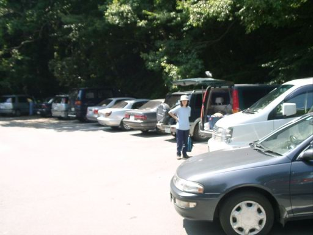
2:00pm. Fnnally we
are here at the starting point of the walk . |
 The first dip...
The first dip...
|
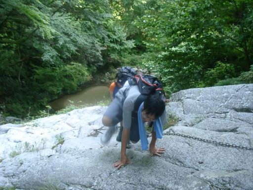
and
the first climb. |
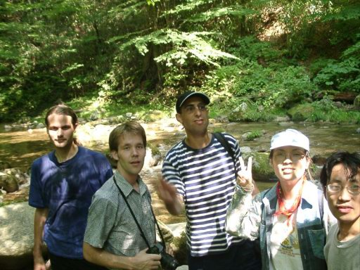
|
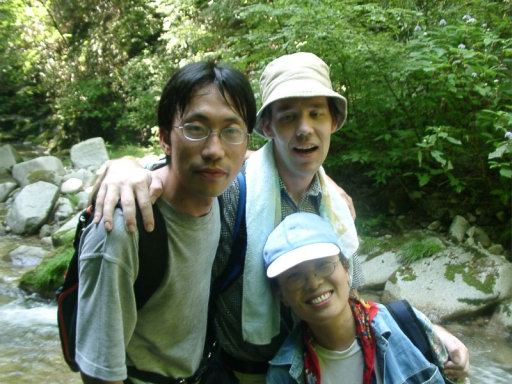
|
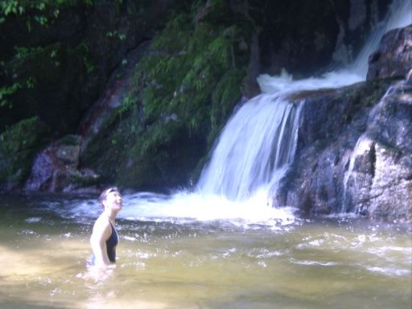
Waterfall
and a beauty. |
|
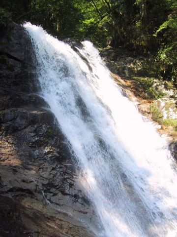 |
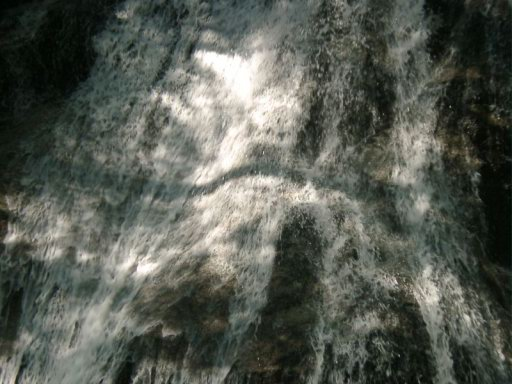 |
|
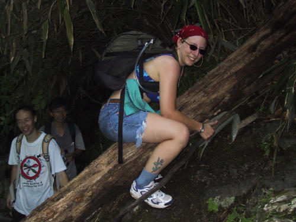
You know what is written on her car? We found it's true here:
"my other car is a broom" ;-)
|
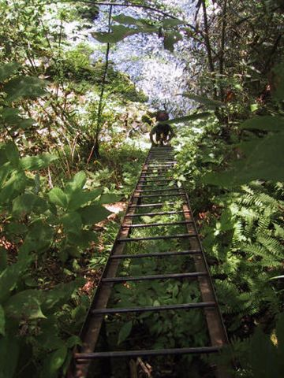 |
|
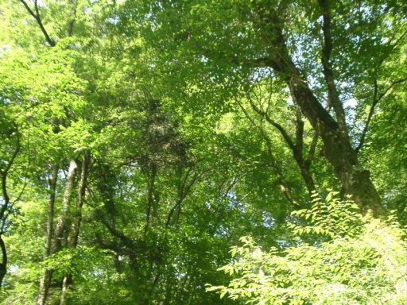 |
| 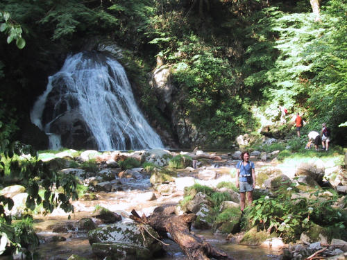 |
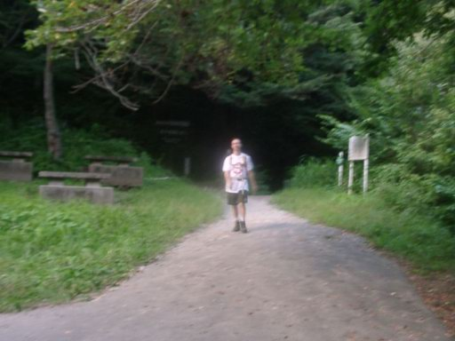
It's time to go home. We managed to get back before dark after
the long traffic jam, swimming, ladders and chains.
|
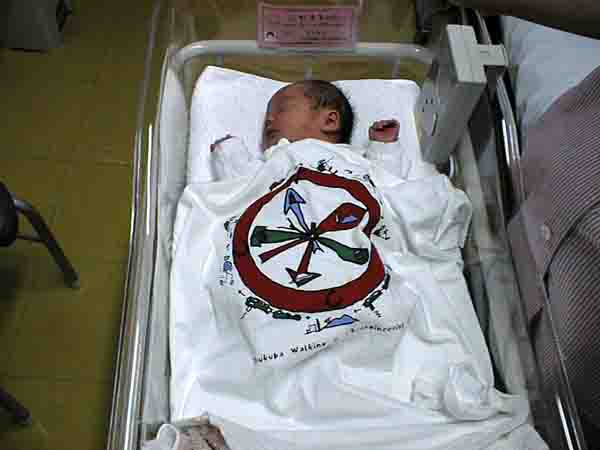
Hazuki Sophia Ono, Naomi and Victor's baby
|
This innocent looking girl prevented Victor, the organizer,
to join this walk. Her dad missed this walk for the first time
since the Club started because of her arrival. She was born on
exactly the day of this walk, at 3:23 in the morning. |
Report by Stefan
We were a bit unlucky with the traffic, it took us one
hour from Sakura-Tsuchiura to Tsuchiura-Kita due to a
bad traffic jam (accident and beginning of obon) and
another 2 1/2 from there to Iwama (route 6 was jammed,
too, so in the end we took those very small roads that
run alongside the highway in most places. Finally our (Stefan's)
car managed to miss the narrow road that leads to the
trailhead and we drove up and down the valley for more
than half an hour trying to find the others, but we
caught up with them on the trail.
Being almost 4 hours late, unfortunatly we did not have
too much time for swimming, but we still managed to have
a quick dip in two of the pools along the trail. Very
enjoyable trip !
Back to the
Home Page